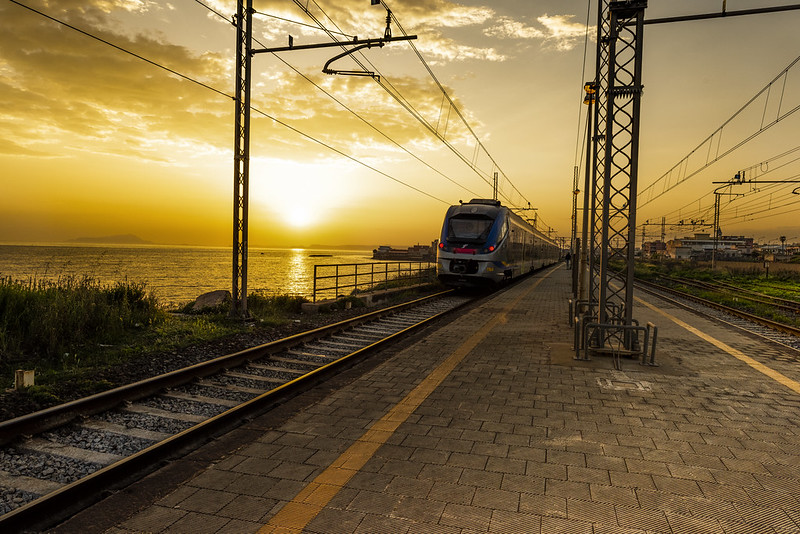

Benefici socioeconomici
Quantificazione dei benefici per utenti, comunità e sistema economico, inclusi tempi di viaggio, sicurezza, congestione ed esternalità ambientali.
Studi e valutazioni economiche
Analisi economiche a supporto delle decisioni di Rete Ferroviaria Italiana: benefici sociali, impatti territoriali e valore strategico degli investimenti ferroviari.

Infrastrutture ferroviarieStudi per RFI
Un quadro di valutazione che rende leggibili gli effetti dei progetti lungo il loro territorio e nel tempo.
Quantificazione dei benefici per utenti, comunità e sistema economico, inclusi tempi di viaggio, sicurezza, congestione ed esternalità ambientali.
Analisi degli effetti attesi su turismo, produzione, redditi, occupazione e gettito, con attenzione alle diverse scale geografiche.
Valutazione delle alternative progettuali e del valore delle opzioni che possono accompagnare l’evoluzione della rete.
Apri un report per consultare obiettivi, approccio e principali elementi della valutazione. I documenti originali sono disponibili in ciascuna pagina.
Calabria · Giugno 2025
Opzioni reali e valutazione del progetto di elettrificazione della tratta Catanzaro Lido–Roccella Jonica, Lotto 4.
Takeaway Le opzioni abilitate dal Lotto 4 portano il valore economico-sociale esteso a 11,41 mln €.
Leggi il reportNapoli · Gennaio 2024
Confronto economico e socioeconomico tra la soluzione ferroviaria a raso e quella interrata.
Takeaway La soluzione a raso è preferibile: rapporto benefici-costi 6,6, contro 4,9.
Leggi il reportCampania · Gennaio 2024
Valutazione dei benefici del collegamento ferroviario diretto e confronto con un’alternativa su gomma.
Takeaway Il treno genera circa 135 € di beneficio per utente e un rapporto benefici-costi di 14,8.
Leggi il reportFriuli-Venezia Giulia · Giugno 2025
Benefici e opzioni reali nel subentro di RFI nella gestione della linea ferroviaria regionale.
Takeaway 37,58 mln € di benefici attualizzati e 6,09 mln € di opportunità future.
Leggi il reportQuesta pagina presenta una sintesi dei lavori. Per dati, ipotesi e approfondimenti metodologici, consulta i report e i documenti originali collegati.